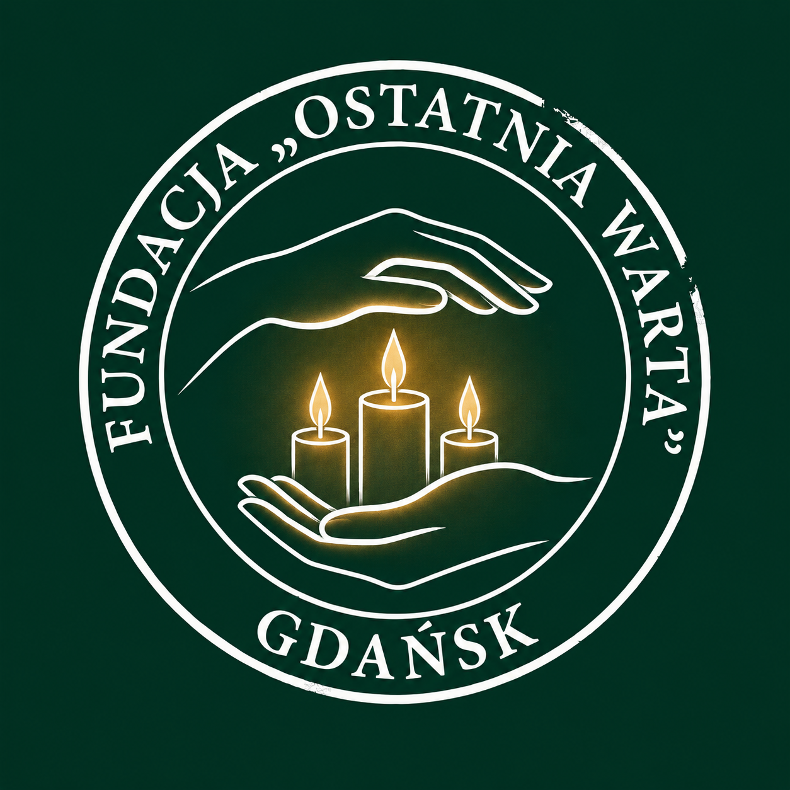
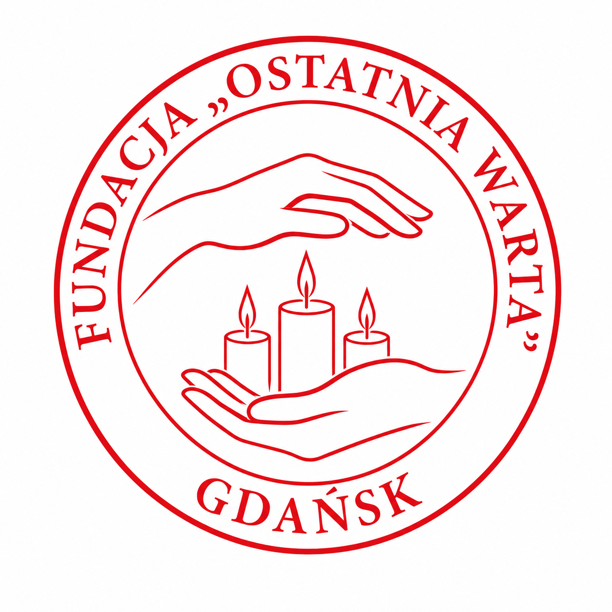

This Brand Book sets out the rules for using the logotype, corporate colors, typography, and elements of visual and official identity of the "Ostatnia Warta" Foundation. Adherence to the following guidelines is mandatory in all promotional, official, and digital materials, ensuring consistency and a professional image of the organization.
The Foundation's logotype constitutes a visual manifesto of our mission: bringing relief, care, and steadfast accompaniment to another human being. This mark, in its simple and legible form, departs from literal heraldry in favor of universal symbols of empathy. It embodies calm, support, and readiness to perform social service for individuals in the most difficult moments of life.
A circular seal with the Foundation's name and location (Gdańsk) displayed on the rim. The closed, circular form symbolizes community, the cycle of life, and the continuity of our work and dedication to beneficiaries.
The central motif features two horizontally arranged hands. The lower one symbolizes stable support and readiness to help, while the upper one - protection, safety, and care. They directly refer to the service of accompaniment and the concept of the "End-of-Life Doula".
Three candles placed in the center, protected by hands, are a universal symbol of life, hope, and light. They literally reflect the idea of "keeping watch," keeping vigil by the sick, and cultivating the memory of those who have passed away.
Dark green logotype elements on a white background, enriched with Deep Red accents (e.g., the second hand) and Gold. The basic mark for documents and websites.

Dedicated to premium materials. On a dark green background, the logotype contours take on the color of Pure White (#FFFFFF), and internal details remain Gold (#D4AF37).

An acceptable logotype variant using the complementary color palette (Deep Red). Used in specific promotional materials or special campaigns.
The Foundation's image is based on a balanced, elegant color palette that inspires trust, seriousness, and calm.
HEX: #133a2d | RGB: 19, 58, 45
HEX: #D4AF37 | RGB: 212, 175, 55 | CMYK: 15, 25, 85, 5
HEX: #a83232 | RGB: 168, 50, 50
HEX: #1a5f4a | RGB: 26, 95, 74
HEX: #333333 | RGB: 51, 51, 51
HEX: #FCFCFC | Pure White: #FFFFFF
Pursuant to Management Board Resolution No. 4/2026, the Foundation uses strictly defined patterns of official seals. All approved seals appear exclusively in red.
Official e-mail correspondence must include a consistent informational and legal signature. Below is the official layout template: